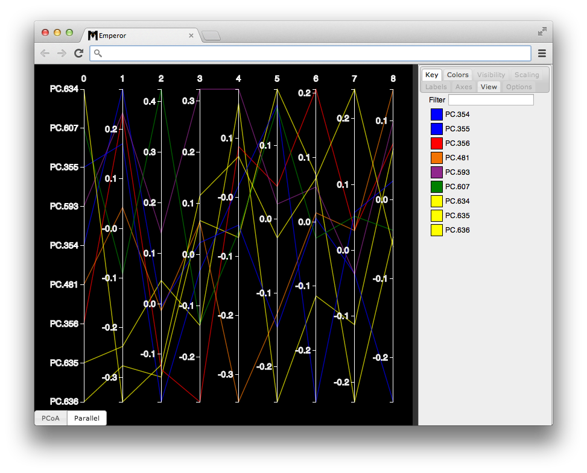
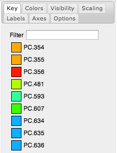
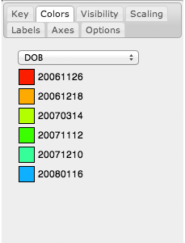
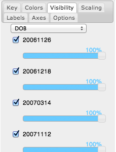
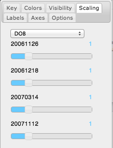
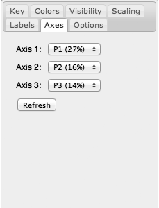
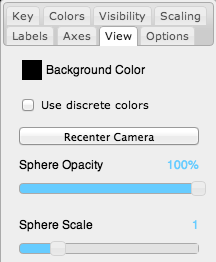
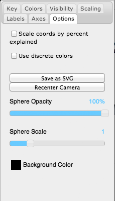

Emperor is a local full-browser enabled scatter plots visual tool. Its modern user interface, allows you to customize the appearance of your plot by controlling things like: opacity, sphere scaling, coloring, dimensions being presented among many others.
This document tries to go through an overview of the controls that can be found in the graphical user interface as well as some of the common use cases that Emperor allows you to work with.
Emperor's graphical user interface is mainly composed of a visualization canvas (left side) and a set of settings controllers (right side). Figure 1 highlights the (a) total number of points being displayed; (b) main display with the first three dimensions of this dataset; (c) tool-tabs to manipulate features of the plot; (d) visualization type selector to switch between parallel plots and three dimensional plots. Figure 2 presents the same dataset but using a parallel plot display.
Figure 1. Emperor’s graphical user interface. (a) Sample counter; shows the total number of samples in the dataset and the number of samples that are currently visible. (b) Canvas; main plot scene where the data is displayed. (c) Tool tabs; controls that allow you to modify and interact with your data.
Figure 2. Parallel plot visualization of the dataset presented in Figure 1. Parallel plots are particularly useful to get an overview of the distribution of other dimensions in a given set of points.
Emperor presents multiple tabs on the right sidebar, each of these tabs perform different tasks over the data presented in the visualization canvas.
Shows a list of the sample identifiers that are contained in the current dataset and a box with the color that the sample is currently colored by on screen. Double-clicking each square, will make an indicator, white arrow, appear on screen.

Shows a list of the categories listed under the mapping file column selected in the menu of this tab (for this example DOB). Each category has a color box where you can modify the current color of the samples that belong to this category.

Shows a list of the categories listed under the mapping file column selected in the menu of this tab, for each of these categories a checkbox and a slider is presented. The checkbox will allow you to hide (unchecked) or show (checked) samples that belong to each category. The slider controls the opacity of the samples defined under this category.

Similar to visibility but controls the scale of the spheres. The values range from 0.2 to 4, when the slider is located at a value of 2, the spheres will be twice as bigger as in the beginning. By default all sliders are set to a value of 1.

Similar to Visibility but controls the appearance of the labels. The checkbox at the top of this tab will add or remove the labels from the plot.

Although Emperor is only capable of displaying three dimensions at a time, the dimensions that are being displayed can be selected from this menu. To update the plot to reflect the latest changes, you’ll have to click the refresh button.

General features of a plot as presented by Emperor, are modified from this menu; by default Emperor will try to color samples along a continuous color gradient, to turn this option off, select “Use discrete colors”. The sphere opacity and sphere scale controls override the options in Scaling and Visibility tabs.

The different options that will affect the overall plot as it is are listed under this tab. Scaling the coordinates by the percent explained, will re-scale the data by multiplying all the values in that dimension by the ratio explained. By default, Emperor will color the samples in a discrete way, each group is independent, but you can select “Use gradient colors” to create a gradient in the values of the columns. This is helpful when we are trying to display categories that behave this way, like time, age, or ph.
